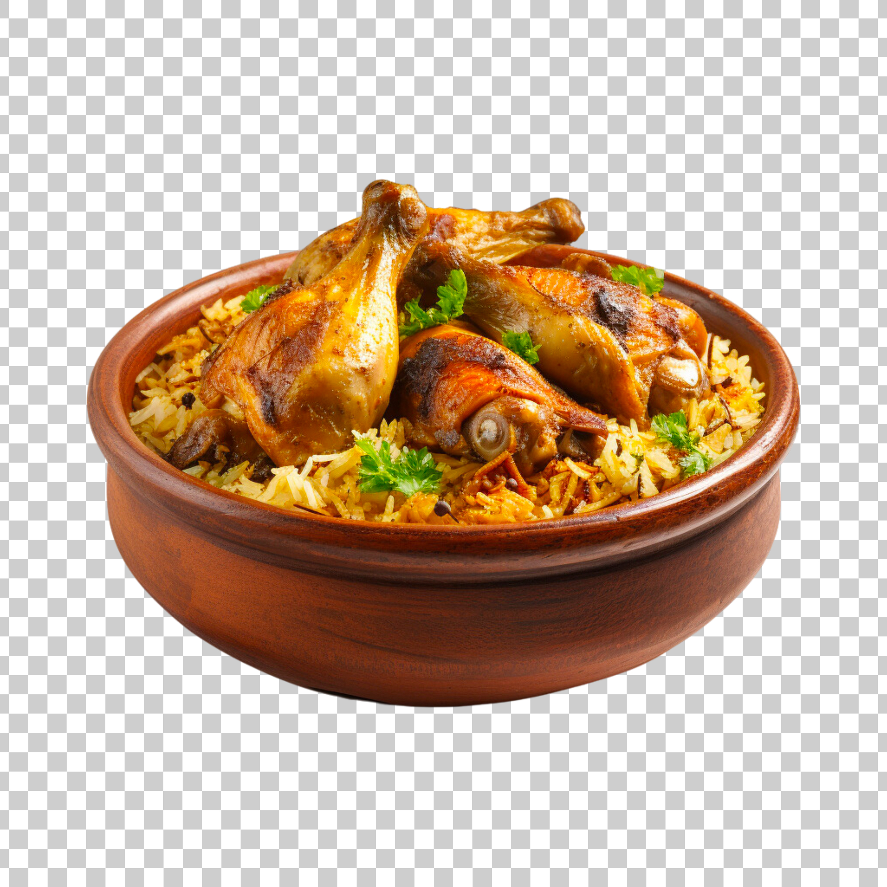

Biryani

Description
Biryani consists of long-grained rice (like basmati) flavored with fragrant
spices such as saffron. It’s layered with lamb, chicken, fish, or vegetables and a thick gravy.
The dish is then covered, its lid secured with dough, and cooked over a low flame.
Biryani’s origins likely began in Persia as a rustic rice-and-meat dish and then traveled to India.
Ingredients
- ½ kilogram chicken (skinless bone-in or boneless, large pieces)
- 3 tablespoons plain yogurt (curd or dahi)
- ¼ tablespoons ginger-garlic paste (1 inch ginger & 4 garlic cloves crushed)
- Spices: salt, turmeric, red chili powder, garam masala
- Basmati rice (aged rice)
- Ghee or oil
- Onion, mint leaves, green chili, and more for flavor
- Water, saffron (optional), fried onions (optional)
Steps
- Marinate chicken in yogurt, ginger-garlic paste, and spices.
- Parboil the rice (partly cook it).
- Layer marinated chicken and rice in a pot.
- Add saffron-infused water, fried onions, and mint leaves.
- Seal the pot with dough and cook on low flame until done.
- Garnish with more fried onions and fresh herbs.
Serve chicken biryani with raita or salan (gravy) for a delightful meal! 🍽️